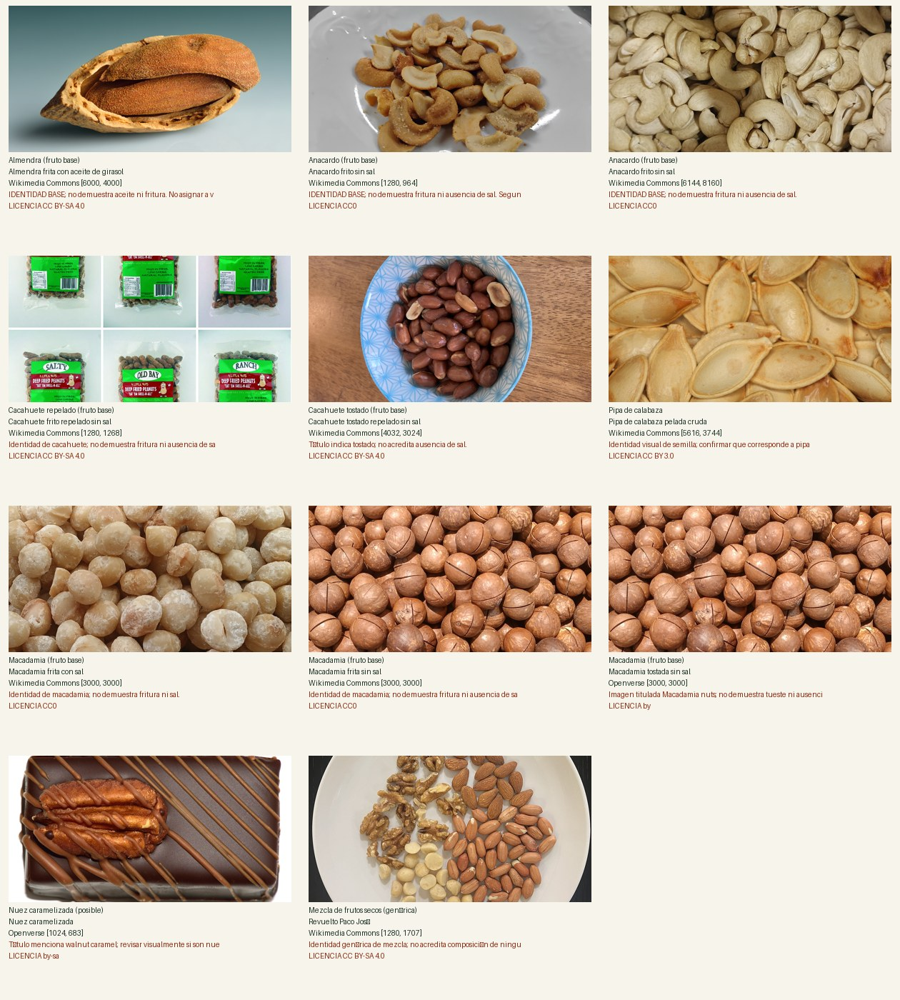

Ninguna fotografía aprobada. 11 archivos se conservan como referencias de identidad base; 11 se apartan por identidad incorrecta o no demostrable. La variante solo se afirma cuando la fuente la demuestra.

| Producto | Archivo | Fuente | Título original | Qué demuestra | Licencia | Resolución | Origen |
|---|---|---|---|---|---|---|---|
| Almendra (fruto base) | almendraFritaGirasol-candidate.jpg | Wikimedia Commons | Almond with two kernels.jpg | IDENTIDAD BASE; no demuestra aceite ni fritura. No asignar a variante comercial concreta. | CC BY-SA 4.0 | [6000, 4000] | Fuente |
| Anacardo (fruto base) | anacardoFritoSinSal-candidate-1.jpg | Wikimedia Commons | CASHEW NUTS.jpg | IDENTIDAD BASE; no demuestra fritura ni ausencia de sal. Segundo archivo/origen, comparar calidad. | CC0 | [1280, 964] | Fuente |
| Anacardo (fruto base) | anacardoFritoSinSal-candidate.jpg | Wikimedia Commons | CASHEW NUTS.jpg | IDENTIDAD BASE; no demuestra fritura ni ausencia de sal. | CC0 | [6144, 8160] | Fuente |
| Cacahuete repelado (fruto base) | cacahueteFritoRepeladoSinSal-candidate.jpg | Wikimedia Commons | Peanut Kernels.jpg | Identidad de cacahuete; no demuestra fritura ni ausencia de sal. | CC BY-SA 4.0 | [1280, 1268] | Fuente |
| Cacahuete tostado (fruto base) | cacahueteTostadoRepeladoSinSal-candidate.jpg | Wikimedia Commons | Dry Roasted Virginia Peanuts.jpg | Título indica tostado; no acredita ausencia de sal. | CC BY-SA 4.0 | [4032, 3024] | Fuente |
| Pipa de calabaza | calabazaPeladaCruda-candidate.jpg | Wikimedia Commons | Pumpkin Seeds macro 1.jpg | Identidad visual de semilla; confirmar que corresponde a pipa pelada cruda y no solo macro genérica. | CC BY 3.0 | [5616, 3744] | Fuente |
| Macadamia (fruto base) | macadamiaFritaSal-candidate.jpg | Wikimedia Commons | Macadamia nut kernels.jpg | Identidad de macadamia; no demuestra fritura ni sal. | CC0 | [3000, 3000] | Fuente |
| Macadamia (fruto base) | macadamiaFritaSinSal-candidate.jpg | Wikimedia Commons | Cut macadamia nuts.jpg | Identidad de macadamia; no demuestra fritura ni ausencia de sal. | CC0 | [3000, 3000] | Fuente |
| Macadamia (fruto base) | macadamiaTostadaSinSal-candidate.jpg | Openverse | Mauna Loa Macadamia Nuts | Imagen titulada Macadamia nuts; no demuestra tueste ni ausencia de sal. Duplicada binariamente con la anterior. | by | [3000, 3000] | Fuente |
| Nuez caramelizada (posible) | nuezCaramelizada-candidate.jpg | Openverse | walnut caramel -- view from the top | Título menciona walnut caramel; revisar visualmente si son nueces caramelizadas y no salsa/postre. | by-sa | [1024, 683] | Fuente |
| Mezcla de frutos secos (genérica) | revueloPacoJose-candidate.jpg | Wikimedia Commons | Liat Portal for Foodie Disorder - Mixed nuts assortment.jpg | Identidad genérica de mezcla; no acredita composición de ninguna receta comercial propia. | CC BY-SA 4.0 | [1280, 1707] | Fuente |
Verificar licencia exacta, atribución, duplicados y revisión visual antes de publicar.